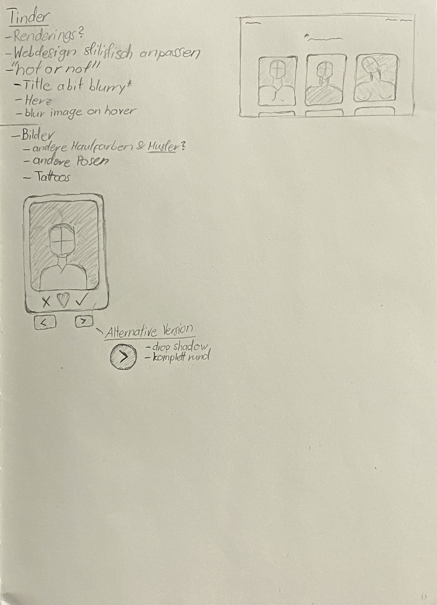
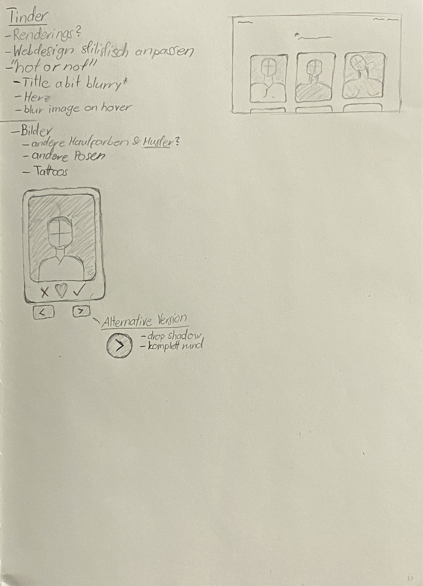

Unscharf → Tinder
Meine Idee ist es, das Thema “unscharf” ein wenig unschärfer zu betrachten.
Ich wollte nicht ein unscharfes Bild im herkömmlichen Sinn zeigen, sondern mehr “outside the box” denken.
Da mit der digitalisierung immer mehr und mehr die grenzen geöffnet werden von was herkömmlich als schön oder scharf galt und was nicht.
Auch die Gender-Grenze wird immer unschärfer deshalb war es meine Idee auch mit diesen Grenzen zu spielen.
Aus diesem Grund möchte ich bei dieser Aufgabe jedem selber die möglichkeit geben zu entscheiden, ob man jetzt die Person die man vor einem hat, scharf findet, oder unscharf.
Das ganze habe ich unterstrichen mit einem weiteren Phänomen der Digitalisierung, Onlinedating.
Der Spitzenreiter dieser Szene ist meiner Meinung nach “Tinder” es ist meist die erste Seite auf die man kommt wenn man an Onlinedating denkt.
Während der Corona-Pandemie hatte ich mir immer wieder mal Homeoffice und auch Zeit um an eigenen Projekten zu arbeiten. Vor ca. 2 Jahren habe ich angefangen mich mit Renderings vertraut zu machen, genauer gesagt mit “Cinema 4D”.
Da ich oft einen unregelmässigen Zeitplan hatte, habe ich mir autodidaktisch auch html und css beigebracht und genau wie bei Cinema 4D konnte ich fast nicht mehr aufhören.
Seit letztem Sommer habe ich immer wieder online Tutorials angesehen und mir somit beigebracht diese Webseite hier zu coden.
Ich dachte mir dass Computer generierte Bilder und Webdesign sich extrem gut ergänzen, aus diesem Grund habe ich mich
auch entschieden mich mit diesen zwei Medien zu bewerben.
Ich designte somit die Personen die man oben gesehen hat, und habe auch diese Webseite geschrieben.
// 2022
 
